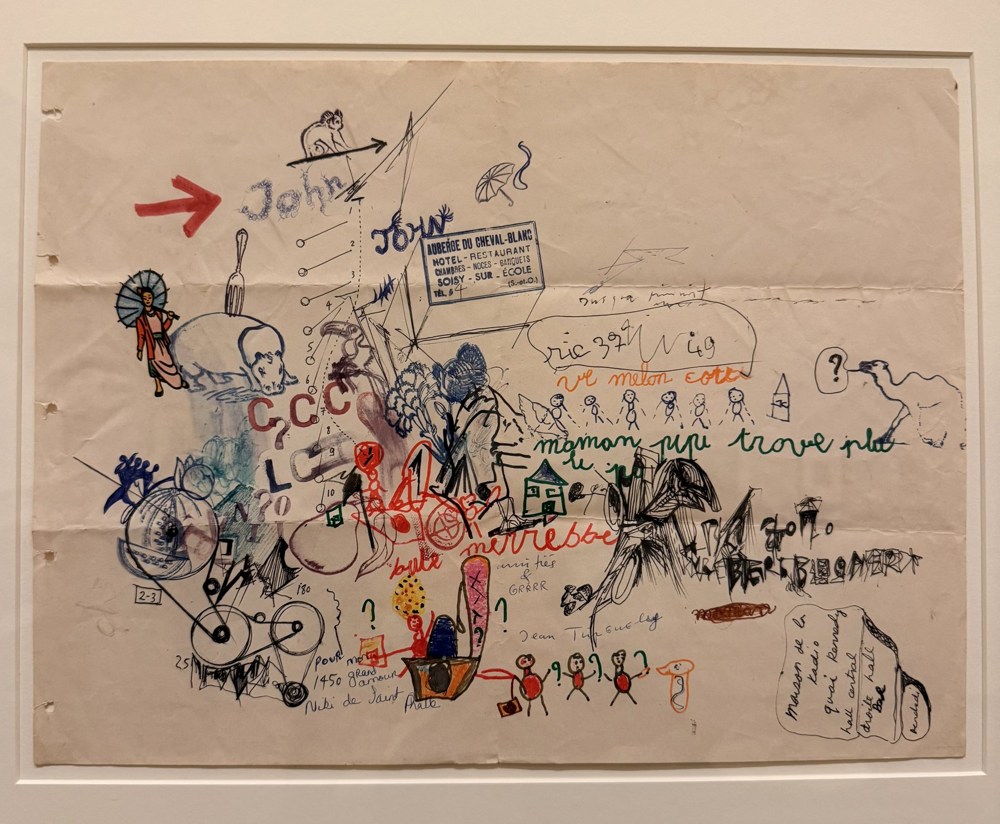

Most letters get read. This one has to be looked at. A single creased sheet is packed edge to edge with ink stamps, marker scrawls, stick figures and wheeled machines, with French handwriting in green, orange and red running through the gaps. A hippopotamus drinks beside a woman with a parasol. A camel holds a question mark in a speech bubble. Two of the most inventive artists in Paris made it together, and they made it for a friend.
That friend was John Ashbery, the poet and critic, then living in the city and writing about its art. Saint Phalle and Tinguely, longtime lovers who would marry in 1971, were frequent collaborators and often on-and-off partners. Their illustrated letters to Ashbery reported on everyday events, such as a recent trip to Italy, and proposed plans for a rendezvous. This early one, in the Morgan Library & Museum's collection since 2019, was shown in Friends Who Came to See Me: Drawings from John Ashbery's Collection, which ran from May 1 to October 25, 2026.
A friendship in Paris
Ashbery took notice of Saint Phalle in 1961, when she was showing her shooting paintings. His review that July opened with the line that the city's "art season is ending not with a whimper but with a series of repeated bangs." Within a couple of years the artist and her partner were sending him pages like this one.
The sheet is dated by a rubber stamp reading "Auberge du Cheval Blanc, Soisy-sur-École," the former inn outside Paris that Saint Phalle bought with Tinguely and moved into in the winter of 1963 to 1964, turning it into a home and studio. The Morgan's catalogue places the letter in late 1963 or shortly after. A handwritten note about the bar at the Maison de la Radio, which was completed in 1963, points to a plan to meet Ashbery on an unspecified Friday. Both artists signed with dedications. She added "pour mon grand amour." He wrote "amitiés & GRRRR."
Three hands on one page
The letter is a collaboration among three people. The catalogue credits a young child, most likely Saint Phalle's son Philip Matthews, with the stick figures, the decals, the impressions from animal-shaped rubber stamps and the misspelled nonsense in marker, such as "maman pipi trouve plu le po," or "Mama pee-pee can't find the potty." The green handwriting runs right across the middle of the sheet.
Tinguely's own mark is the machine in black pen at lower left, wheels tied together with running belts. He drew machines like it in both Ashbery letters. In March 1963 he had shown one such work, The Bamboo's Swan Song, and he was then planning Eureka, his first major public work and a giant machine now on the shore of Lake Zurich, notable for its lack of an identifiable function. Here the same engineering turns up as a doodle, parked among the camel and the small red figures.
How they worked together
They met in Paris in 1956. Tinguely was then married to the artist Eva Aeppli, and Saint Phalle was still with her first husband, the writer Harry Mathews. The collaboration began almost at once. Saint Phalle asked Tinguely to build the armature for her first sculpture, and by the end of 1960 the two were sharing a studio in an artists' colony at the Impasse Ronsin, the Paris site where Constantin Brancusi once had his studio. Both belonged to the Nouveaux Réalistes, the group the critic Pierre Restany founded in 1960. She was its only woman.
The Museum Tinguely in Basel describes the working arrangement as a trade: each acted as the other's assistant, adviser, instigator of ideas and co-creator. Tinguely supplied technical help. Saint Phalle supplied fantasy. She once suggested he put feathers on his machines, and he did, which gave him his series of Baloubas. The museum lists early pieces they made together, including an assemblage with a fire engine in 1960 and a Portrait on Roller Skates in 1961. It also points out that Tinguely took part in her films and that she took part in his happenings. Both also worked alongside artists such as Robert Rauschenberg and John Cage in happenings. They wrote to each other constantly, and to friends such as Pontus Hultén, the museum director, so a letter to Ashbery was one more form of an exchange already under way.
The projects grew in scale after the winter of 1963 to 1964, when they moved into the inn at Soisy-sur-École. In 1966 they joined the Swedish artist Per Olof Ultvedt and Hultén at the Moderna Museet in Stockholm to make Hon – en katedral (She – A Cathedral), a pregnant woman 23 meters wide and 6 meters tall, lying on her back, that visitors entered. Inside were an aquarium of goldfish, a sofa for two lovers, a bar, a small cinema showing a Greta Garbo film and a slide for children. It stood from June 4 to September 4, 1966, and was then demolished, as planned. The next year the French pavilion at Expo 67 in Montreal commissioned Le Paradis Fantastique, nine sculptures by Saint Phalle and six machines by Tinguely under the theme "Life confronted with the forces of Destruction." His sharp, moving machinery faced her round, colored figures. The rail-mounted Char Raspoutine, for instance, interacted with her Bébé Monstre. Her biography notes that the polyester resin used for this work damaged her lungs.
Two later projects show how the partnership held. Tinguely began Le Cyclop, a giant head of steel and mirrors in the forest at Milly-la-Forêt, in 1969, and the couple married in 1971. The head was his project, built with friends including Bernhard Luginbühl and Daniel Spoerri, and Saint Phalle contributed along the way. In 1987, at his request, she began covering its face in a mirror mosaic, a job finished in 1991. Tinguely died that August. The Cyclop was completed in 1994 under her supervision. The Stravinsky Fountain next to the Centre Pompidou, inaugurated in March 1983, began as a commission to Tinguely alone. According to the Niki Charitable Art Foundation, he did not want to make another fountain of dark metal sculptures, as he had in Basel, and he insisted on working with her. When the city floated Miró instead, he answered, "No, I'm doing it with Niki or not at all." Of its sixteen sculptures, six are hers, seven are his and three are joint. After his death she made her first kinetic sculptures, the Meta-Tinguelys, in his honor.
Why they worked this way is partly in the pieces themselves. Her figures are soft, bright and often defiant. His machines clank and break down. Put in the same space, they argue and they complete each other, which is what the Montreal theme staged on purpose. The Ashbery letter does the same thing on one sheet of paper, with a child's stamped animals and scrawls beside Tinguely's wheeled machine, and both artists' signatures at the bottom.
Reading the sheet
It is easy to see this as a private joke, and it is one. But the page also works as a plan for a friendship. A ladder of numbered circles runs down the left side. The name "John" appears twice, once in outlined blue letters beside a bold red arrow and once stamped in blue, so the whole sheet seems to point at its recipient. At the lower right a boxed note reads like directions. The mess is deliberate, and so is the tenderness under it.
A second Ashbery letter from the pair, made around New Year 1966 and now numbered 2019.170, is a different sheet. It carries collaged paper, a postage stamp and pink yarn, and it describes a winter trip through Rome and Florence that snow, fog and ice kept from reaching Sicily. Seen together, the two letters show a couple whose art and life ran together, and a friend who kept the results.
Further reading
- The Morgan Library & Museum, online record for Untitled (illustrated letter to John A.), 2019.171: medium, size and credit line.
- The Morgan, Friends Who Came to See Me: Drawings from John Ashbery's Collection: the exhibition and the 2019 gift.
- The Morgan, exhibition large print labels (PDF): the wall text for both letters.
- The Morgan, online record for the 1966 letter, 2019.170: the second letter.
- Friends Who Came to See Me: Drawings from the Collection of John Ashbery, exhibition catalogue (PDF), pp. 84 to 87: dating, stamp, dedications and authorship of the sheet.
- Museum Tinguely, Basel, Niki & Jean, l'Art et l'Amour: how the two divided the work, and their early joint pieces.
- Moderna Museet, Remembering She – A Cathedral: the 1966 collaboration with Per Olof Ultvedt and Pontus Hultén.
- Bureau International des Expositions, Niki de Saint Phalle and Jean Tinguely at Expo 67: Le Paradis Fantastique.
- Centre Pompidou, Le Cyclop: a monumental odyssey: the forest project, 1969 to 1994.
- Niki Charitable Art Foundation, Vive La Fontaine!: how the Stravinsky Fountain became a joint commission.
- Niki Charitable Art Foundation, biography: the timeline from 1956 to 1991.